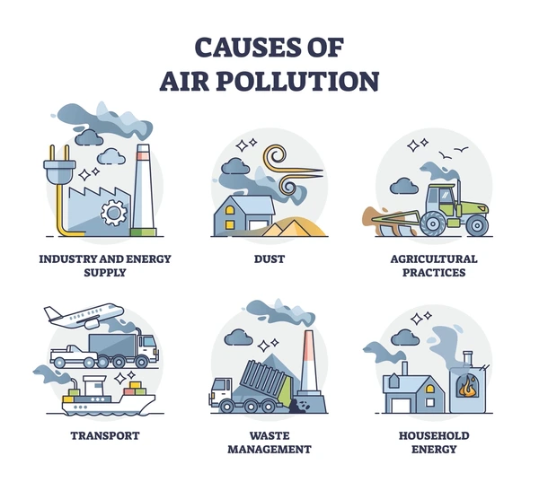
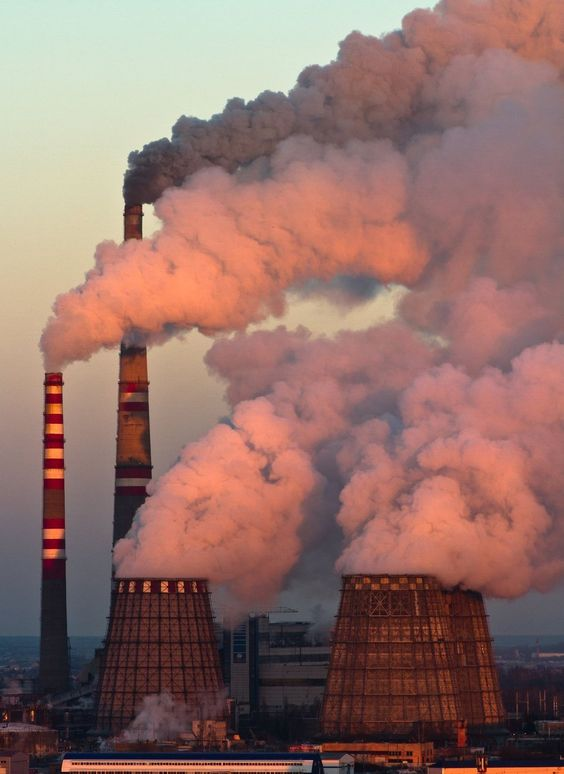
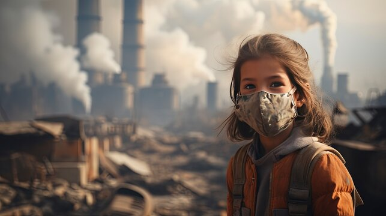

Air pollution is contamination of the indoor or outdoor environment by any chemical,
physical or biological agent that modifies the natural characteristics of the atmosphere.
Air Pollution


| Air Quality Index Levels of Health Concern | Numerical Value | Meaning |
|---|---|---|
| Good | 0 to 50 | Air quality is considered satisfactory, and air pollution poses little or no risk. |
| Moderate | 51 to 100 | Air quality is acceptable; however, for some pollutants there may be a moderate health concern for a very small number of people who are unusually sensitive to air pollution. |
| Unhealthy for Sensitive Groups | 101 to 150 | Members of sensitive groups may experience health effects. The general public is not likely to be affected. |
| Unhealthy | 151 to 200 | Everyone may begin to experience health effects; members of sensitive group may experience more serious health effects. |
| Very Unhealthy | 201 to 300 | Health alert: everyone may experience more serious health effects. |
| Hazardous | 301 to 500 | Health warnings of emergency conditions. The entire population is more likely to be affected. |
Air Quality in Malaysia
| # | AQI | City |
|---|---|---|
| 1 | 104 | Putra Heights |
| 2 | 96 | Alor Setar |
| 3 | 92 | Petaling Jaya |
| 4 | 77 | Bukit Rambai |
| 5 | 75 | Kampung Baharu Nilai |
| 6 | 73 | Simpang Empat |
| 7 | 73 | Kota Bharu |
| 8 | 72 | Tanah Merah |
| # | AQI | City |
|---|---|---|
| 1 | - | Klang |
| 2 | - | Muar |
| 3 | - | Kampung Sungai Ara |
| 4 | 21 | Simanggang |
| 5 | 28 | Sarikei |
| 6 | 35 | Kapit |
| 7 | 37 | Putatan |
| 8 | 42 | Sibu |

Air Quality in Malaysia State
As of June 2024, the air quality across Malaysia varies significantly by state. Most states are experiencing "Good" to "Moderate" air quality levels, with the Air Pollutant Index (API) remaining below 100 in many regions. Kuala Lumpur, for instance, maintains a "Good" air quality level with an API around 39. However, periodic haze from agricultural burning practices in Indonesia can elevate pollution levels, particularly in Peninsular Malaysia, causing temporary spikes in air quality indices.
Effect of Air Pollution

Click the image to read the newest news of Air Pollution.
- Effect on Human
- People experience a wide range of health effects from being exposed to air pollution. Effects can be broken down into short-term effects and long-term effects. Short-term effects, which are temporary, include illnesses such as pneumonia or bronchitis. They also include discomfort such as irritation to the nose, throat, eyes, or skin. Air pollution can also cause headaches, dizziness, and nausea. Bad smells made by factories, garbage, or sewer systems are considered air pollution, too. These odors are less serious but still unpleasant.
- Long-term effects of air pollution can last for years or for an entire lifetime. They can even lead to a person's death. Long-term health effects from air pollution include heart disease, lung cancer, and respiratory diseases such as emphysema. Air pollution can also cause long-term damage to people's nerves, brain, kidneys, liver, and other organs. Some scientists suspect air pollutants cause birth defects. Nearly 2.5 million people die worldwide each year from the effects of outdoor or indoor air pollution.
- Effect on Environment
- Like people, animals, and plants, entire ecosystems can suffer effects from air pollution. Haze, like smog, is a visible type of air pollution that obscures shapes and colors. Hazy air pollution can even muffle sounds. Air pollution particles eventually fall back to Earth. Air pollution can directly contaminate the surface of bodies of water and soil. This can kill crops or reduce their yield. It can kill young trees and other plants.
- Global warming is an environmental phenomenon caused by natural and anthropogenic air pollution. It refers to rising air and ocean temperatures around the world. This temperature rise is at least partially caused by an increase in the amount of greenhouse gases in the atmosphere. Greenhouse gases trap heat energy in the Earths atmosphere. (Usually, more of Earths heat escapes into space.) Carbon dioxide is a greenhouse gas that has had the biggest effect on global warming. Carbon dioxide is emitted into the atmosphere by burning fossil fuels (coal, gasoline, and natural gas). Humans have come to rely on fossil fuels to power cars and planes, heat homes, and run factories. Doing these things pollutes the air with carbon dioxide.